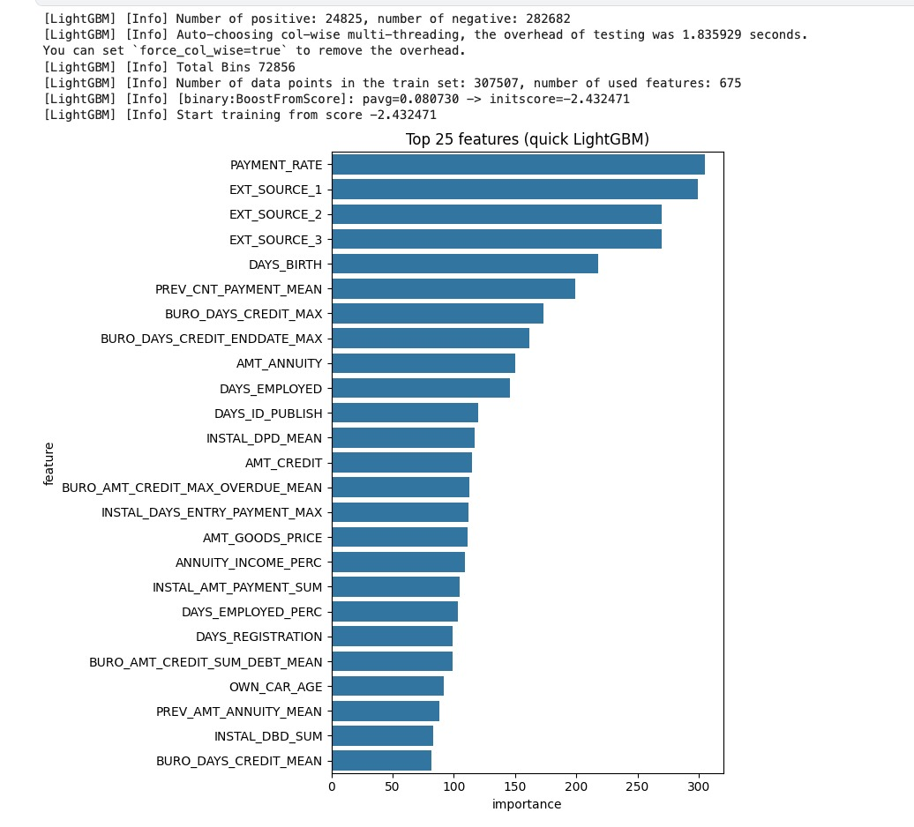
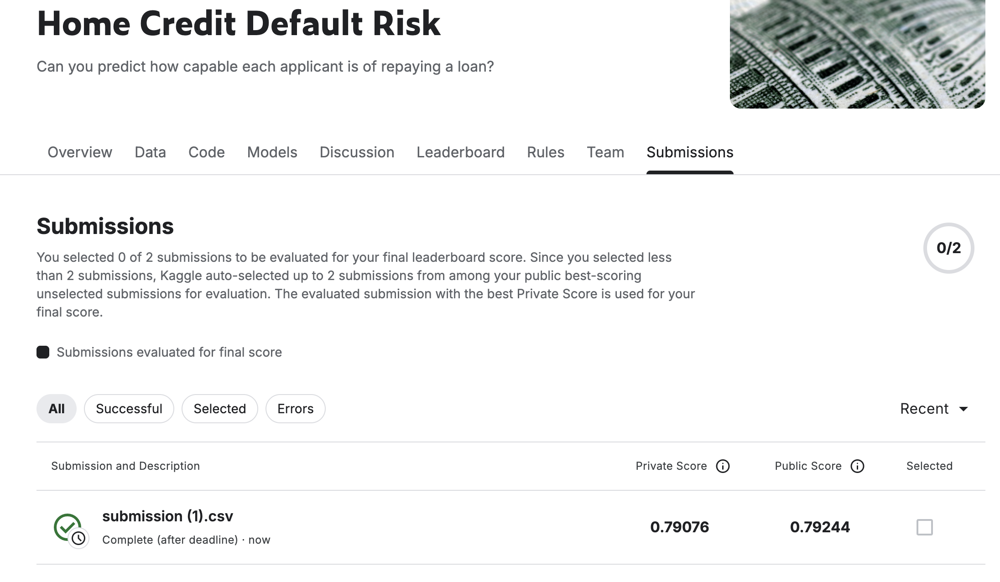
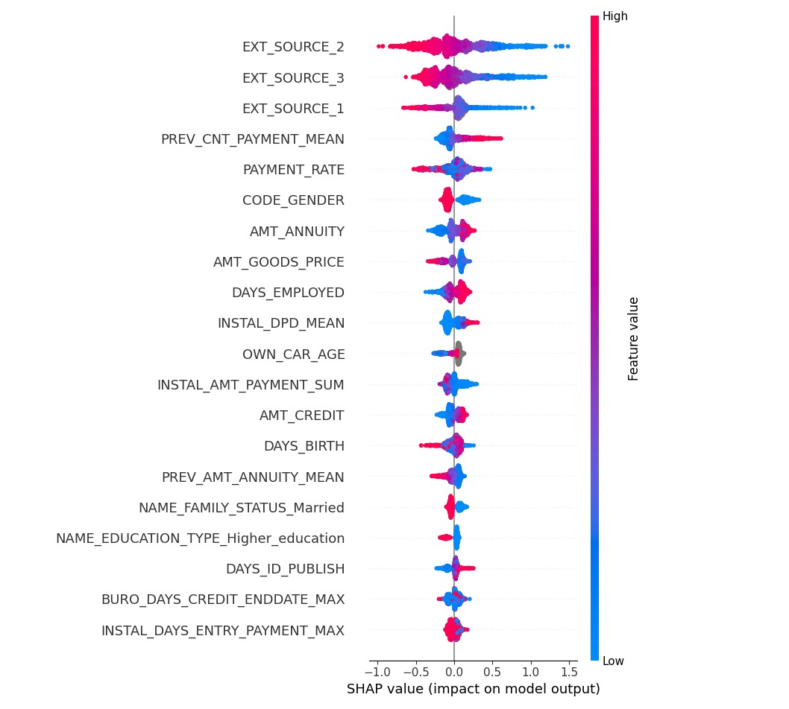
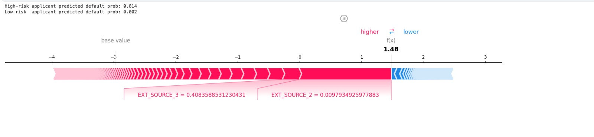
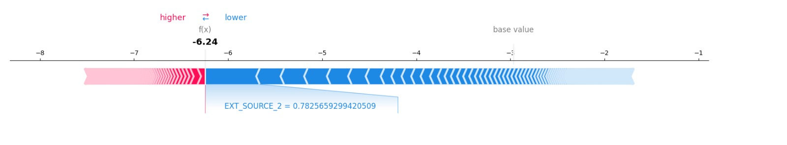

Millions are refused loans simply because they have thin or non-existent credit files, pushing them toward predatory lenders. The task: use alternative data to score who can actually repay, so capable borrowers aren't turned away.
The catch is the data shape. Only 8% of applicants default, so a model that predicts "everyone repays" is 92% accurate and completely useless. We rank probability of default and judge it with AUC-ROC, not accuracy.
The hard part isn't the model, it's the plumbing: six satellite tables of credit history relate to the main application table and have to be aggregated (mean / max / min / sum) down to a single feature vector per person.
First model — one LightGBM on only the main application table (demographics, income, the loan itself, plus the ratio features). No credit history, no payment behaviour. This is our floor, and the honest reference point for everything that follows.
It already clears 0.76, which tells us the basic financials carry real signal. But it's leaving the entire credit-history story on the table.
The lift comes from the six satellite tables and from feature engineering the literature and top solutions kept pointing to.
Summarise every past loan, balance, and payment per applicant — sums, means, extremes.
A fake "infinity" in employment days. Left raw, it poisons the model; replaced with NaN, it stops lying.
One-hot encode with a "was-missing" flag — sometimes the absence of data predicts default.
Credit/income, annuity/income, payment rate — the levers a human credit officer reasons about.
Days-past-due and days-early aggregated over time, not just a static snapshot.
Honest out-of-fold scoring that respects the 8% class split — no leakage, no luck.
Each applicant shows up many times in the satellite tables, once per past loan or monthly balance. A model needs exactly one row per applicant, so we collapse each person's history with mean, max, min and sum.
Repeat for every numeric column and every category, across all six satellite tables. That is how seven tables become roughly 675 features, one clean row per applicant.
PAYMENT_RATE and the three EXT_SOURCE external-credit scores top the model, as expected. The proof that aggregation paid off is lower down: PREV_, BURO_ and INSTAL_ features all rank high. Those are the satellite tables we folded in.
This is phase 1 done with data, not guesswork: the model itself tells us which engineered features carry signal.

We use 5-fold stratified cross-validation. Split the data into five parts, each holding the same 8% default rate, train on four, predict the fifth, rotate. Every applicant ends up scored by a model that never saw them, our out-of-fold estimate.
Stratification matters at 8% positives: random folds could come out lopsided. Holding each fold at 8% keeps the five scores comparable.
Fold scores 0.787 / 0.798 / 0.790 / 0.792 / 0.790. The tight spread plus the close 0.792 leaderboard is the evidence there is no leakage.
We deliberately did not oversample or undersample. Resampling distorts the real 8% base rate and hurts the calibration of the output probabilities. Instead we optimised AUC directly and watched the precision-recall curve.
The important choice was the objective, not row duplication. We kept the natural base rate, used stratified folds, optimised AUC, and let the final LightGBM account for skew with is_unbalance=True.
Takeaway: under 8% positives, accuracy tells the wrong story. Ranking quality and probability calibration matter more.
On an identical feature set, the two gradient-boosting libraries land within 0.0003 AUC of each other. We ship LightGBM — faster on this wide, sparse matrix — and keep XGBoost as the cross-check.
Tight spread = the model generalises. No single fold is carrying the score.
Our out-of-fold estimate was 0.79139. Kaggle returned 0.79244 public and 0.79076 private. All three land within 0.002 of each other.
That agreement is the whole point: the model is not overfit, the cross-validation was honest, and the score is one we can defend.

SHAP over a sample of applicants. Each dot is one person. Red is a high value of that feature, blue is low. The three EXT_SOURCE external-credit scores dominate: high scores sit far left, pulling predicted risk down.
Payment history (INSTAL_DPD), debt ratios (PAYMENT_RATE) and age (DAYS_BIRTH) follow. Nothing exotic, all defensible.


Red pushes toward default. EXT_SOURCE_2 ≈ 0.01 and EXT_SOURCE_3 ≈ 0.41, both very low, drive the score to an 81% default probability.

Blue pushes toward repay. EXT_SOURCE_2 ≈ 0.78, a strong score, pulls this applicant down to a 0.2% default probability.
The +0.022 lift came almost entirely from aggregating tables and engineering ratios — not from model choice. LightGBM and XGBoost tied.
Accuracy is a trap at 8% positives. AUC and the PR-curve kept us honest about what "good" actually means here.
One sentinel value (365243) and a forgotten AUC metric setting each cost real performance. Read the data carefully.
Blend LightGBM + XGBoost + CatBoost and add bureau-balance trend features — the realistic path toward top-5%.
A low learning rate with many trees and early stopping gives a stable fit; moderate leaves plus regularisation control overfitting across 675 features.
The brief suggested them. A full network over 675 mostly one-hot features is intractable and would not improve ranking, so we treated the boosting model as our probabilistic model and optimised AUC. A small demo can be added if required.
The brief suggested it. We pruned by feature importance instead, because PCA destroys interpretability and we needed readable features for SHAP.
SMOTE and undersampling distort the base rate and calibration. AUC plus stratified folds handled the 8% honestly.
Tied on AUC, 0.79139 vs 0.79170. LightGBM is faster on this wide, sparse matrix, so it became the submission model.
We sit at 0.792. The top of the board reaches roughly 0.805 private. The gap is real but expensive.
Winning solutions used hundreds more engineered features, bureau-balance temporal trends, and stacking: many models (LightGBM, XGBoost, CatBoost, neural nets) blended by a meta-learner.
Add bureau-balance trend features, blend our LightGBM and XGBoost, try CatBoost. Each adds a small increment.
The honest framing: the last point and a half of AUC costs exponentially more effort. We prioritised a correct, explainable pipeline over a fragile leaderboard chase.